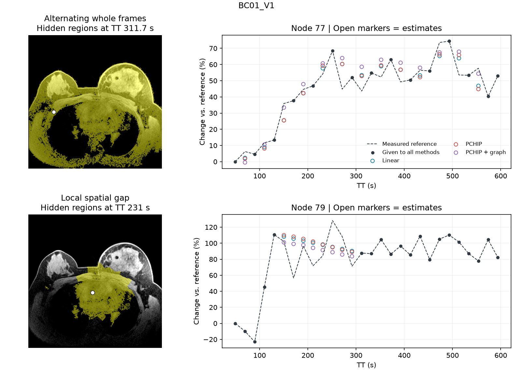
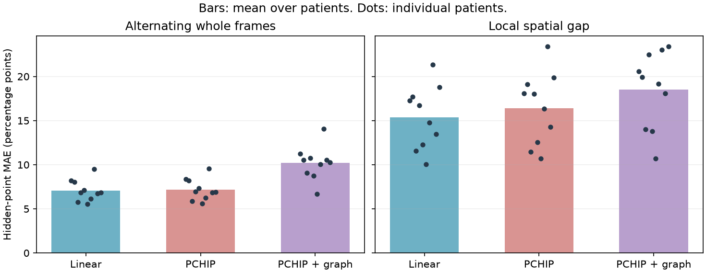

02 给了我们每个区域的实测信号曲线和邻居名单。03 做了一次「遮住再补」的实验。我们先故意藏起一部分实测值，只把剩下的值给三种方法。补完后揭开原来的值，比较各方法猜得有多准。这些方法是以后评估 GNN 的参照，也叫 baseline。
首尾观测保留，所以方法能同时用缺口前后的测量。这里做的是同一次检查内的曲线补全。

| 缺失方式 | 方法 | 患者数 | 平均 MAE (百分点) | 平均 RMSE (百分点) |
|---|---|---|---|---|
| Alternating whole frames | Linear | 10 | 7.079 | 13.315 |
| Alternating whole frames | PCHIP | 10 | 7.182 | 13.525 |
| Alternating whole frames | PCHIP + graph | 10 | 10.201 | 16.276 |
| Local spatial gap | Linear | 10 | 15.392 | 22.601 |
| Local spatial gap | PCHIP | 10 | 16.382 | 24.139 |
| Local spatial gap | PCHIP + graph | 10 | 18.505 | 25.247 |

图用 MAE（平均绝对误差）。例如实测相对变化为 +40%，估计为 +35%，这点的绝对误差就是 5 个百分点。先对每次检查的隐藏点计算误差，再对同一患者的访视取均值，最后对患者等权平均。表中的 RMSE 同样用百分点表示，对较大的误差更敏感。
这里评估的是两种人工遮挡方式和这一种固定平滑规则。空间相邻的区域可能具有不同的时间曲线，平滑会拉近它们，这是误差变大的一种可能解释。要评估 GNN，后续可以用相同缺失掩码与线性插值比较，并按患者留出测试数据。